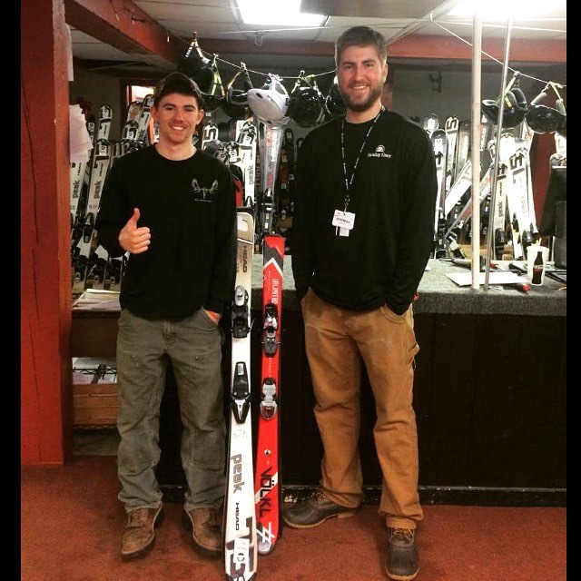

I have spent the past two winters working as a Ski and Snowboard Technician at Sunday River Ski Resort. This winter will be my third, and I couldn't be more excited to work for one of the Northeast's premier ski resorts. Located in Newry, Maine, Sunday River is only about 15 minutes from my house. The close proximity to my home, ubeatable benefits, family-like feel, and a need for extra spending money led to my employment with Sunday River. My personal relationship with Sunday River dates back to 2005, when I first learned how to carve my way down the picturesque slopes. Flash forward to now, almost thirteen years later, and my love for skiing has only grown stronger.
As a Ski Tech, my main responsibilities include operating the register, keeping inventory, providing demonstrations, and administering, maintaining and repairing ski/snowboard equiptment. Working at Sunday River has helped me gain confidence in my leadership abilities and has given me the chance to interact with people from all walks of life. If you're ever lucky enough to be near Western Maine during the wintertime, I encourage you to get out on the slopes and experience the skiing that's become a part of me. Make sure to check out the gondola lift, Camp, North Peak, the Jordan Grand, and White Heat. As for me? I'll race you to the lodge. See you at the bottom!
<